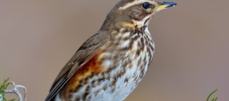

Tudo sobre a Fauna do Brasil!
Aqui você encontrará tudo sobre os principais pássaros da fauna brasileira
Sabiá
Sobre
Sabiá é o nome popular dado a espécies presentes na família Turdidae e na família Mimidae. Os sabiás da família Turdidae pertencem ao gênero Turdus. Os sabiás deste gênero possuem o canto bastante evoluído. No Brasil encontram-se as seguintes espécies:
- Turdus flavipes – Conhecido popularmente como sabiá-una, a fêmea é conhecida como sabiá-preto, atinge a maturidade sexual com 12 meses.
- Turdus leucomelas – Conhecido popularmente como sabiá-barranco, e é mais comum no interior do Brasil.
- Turdus amaurochalinus – Conhecido popularmente como sabiá-poca, é a espécie mais conhecida pelos brasileiros, conhecido pelo seu aspecto físico ou pelo seu canto triste.
- Turdus albicollis – Conhecido popularmente como sabiá-coleira, seu canto apresenta estrofes suaves, prolongadas e ininterruptas. Este pássaro atinge a maturidade sexual aos 10 meses de idade.
- Emberizidae platensis – Único sabiá do gênero Emberizidae, conhecido popularmente como sabiá-do-banhado, espécie campestre de cauda longa, geralmente vivem em pântanos.
- Saltator coerulescens – Espécie do gênero Saltator, conhecido popularmente por sabiá-gongá, não há dimorfismo sexual, seu ninho é do tipo taça e é feito com gravetos e gramíneas.
- Mimus saturninus – Conhecido como sabiá-do-campo, esta espécie é uma das duas existentes da família Mimidae; o ninho desta espécie é construído grosseiramente com gravetos secos, algodão e grama. É uma espécie bastante agressivas.
- Turdus rufiventris – Conhecido popularmente como sabiá-laranjeira, esta ave é símbolo do estado de São Paulo, seu ninho é feito em forma de tigela com argila e folhas secas, são pássaros que são encontrados até mesmo em locais urbanizados.
- Turdus subalaris – Conhecido popularmente como sabiá-ferreiro, este pássaro passa a maior parte do seu tempo em matas, preferindo os galhos baixos das copas.
- Mimus gilvus – sabiá-da-praia, como seu nome sugere este pássaro vive no litoral brasileiro, esta é uma das duas espécies da família Mimidae.
- Turdus hauxwelli – sabiá-bicolor, esta espécie habita as florestas, e no Brasil está presente em grande parte da Amazônia.
- Catharus fuscescens – Conhecido popularmente como sabiá-norte-americano, porém habita regiões no Brasil como: Amazonas, Rondônia e Mato Grosso.
O termo sabiá deriva da língua tupi e significa “aquele que reza muito” e é em alusão ao rico repertório vocal destes pássaros. Além de frutos e sementes, consomem insetos e retiram minhocas de solos úmidos em tempos de chuva. Geralmente os ninhos são construídos em formas de taça, compostos por raízes e musgos, com um reboco externo feito de barro, sendo presos por galhos ocultos na folhagem. De modo geral são aves parcialmente migratórias.
